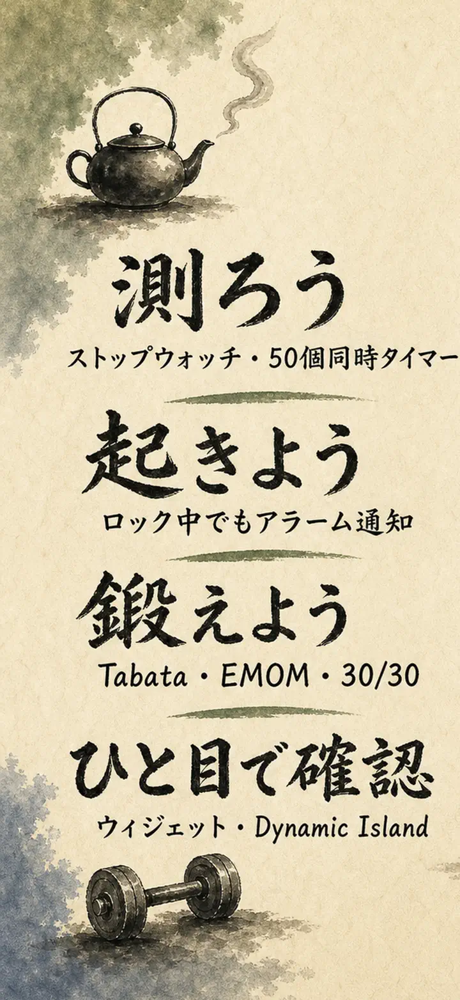
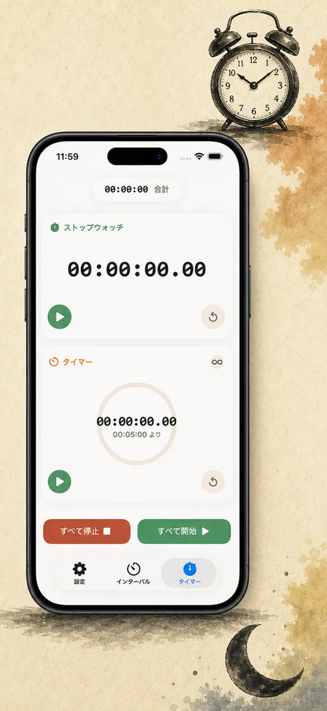
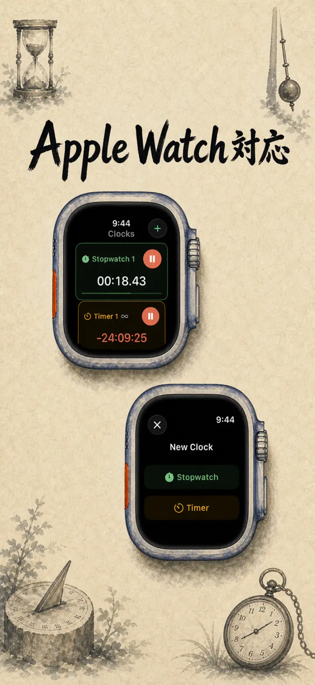
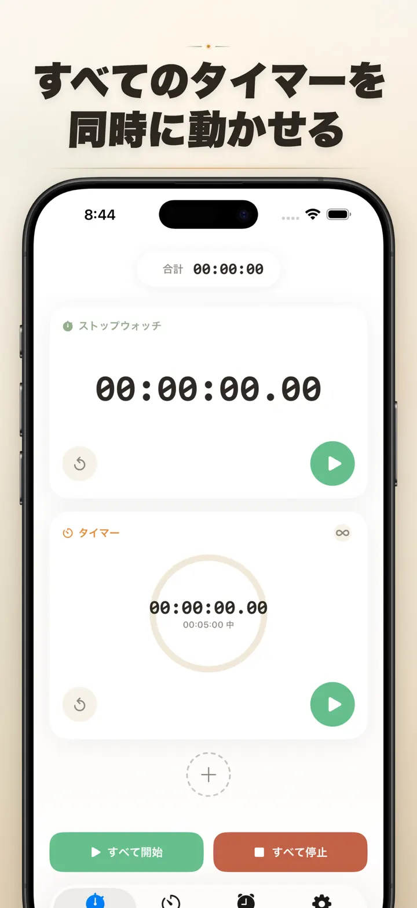
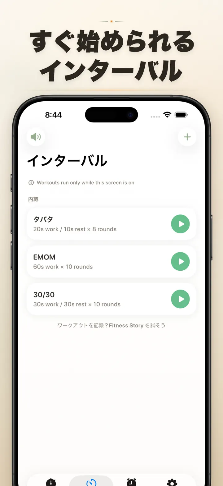
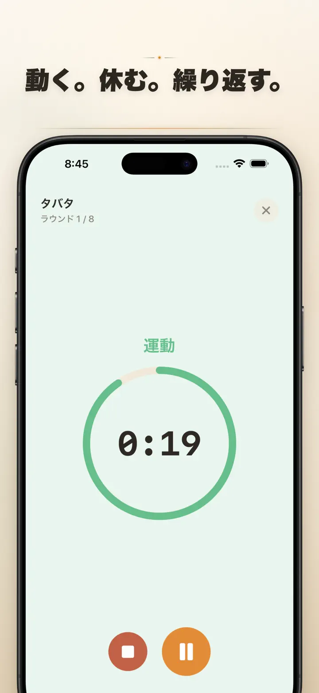
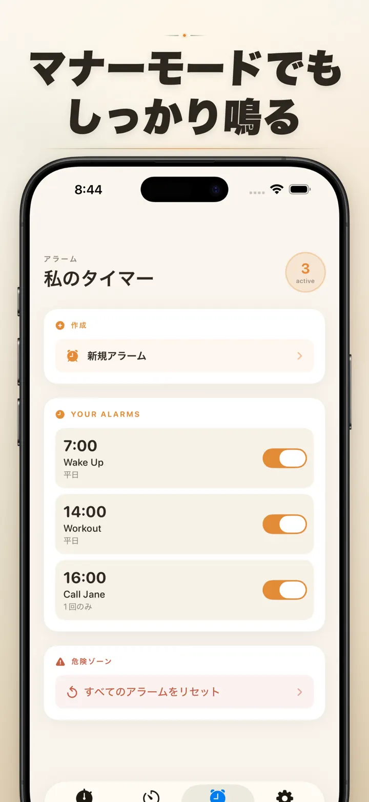

Timer on Me
タイマー・アラーム・HIIT
日付アラームが新登場。将来の任意の日時に一回限りのアラームを設定可能。繰り返しアラーム、50個のタイマー同時使用、HIIT・Tabataワークアウト、Apple Watch対応。
App Storeからダウンロード
アプリについて
「私のタイマー」はiPhone・iPad・Apple Watchで使えるマルチタイマー＆ストップウォッチです。最大50個のタイマーを同時に動かし、HIIT・タバタ・ポモドーロも正確に計測。そしてアラームは必ず鳴ります — アプリを閉じていても、iPhoneがロックされていても。
アラーム
- 目覚ましやリマインダーを、カスタムラベルと曜日スケジュールで設定
- AlarmKit搭載 — iPhoneロック中や「私のタイマー」を閉じていても確実に鳴ります
- スヌーズの長さも自由(3 / 5 / 9 / 15 / 30分)、オフにすることも可能
- 内蔵着信音から選ぶか、自分の音源を読み込んで使用
- 専用のアラームタブからワンタップでオン・オフ
インターバルトレーニング
- タバタ・EMOM・30/30のプリセット内蔵、2タップですぐスタート
- カスタムインターバルエディタ:ワーク・レスト・ラウンド数を分秒単位で自由設定
- フルスクリーンのトレーニング画面、フェーズごとの色変化と消音オプション
- 途中で一時停止・スキップ・再開しても進捗はそのまま
Apple Watch
- 完全ネイティブのwatchOSアプリ、ただの同期表示ではありません
- 手首で複数のストップウォッチとタイマーを同時実行
- ストップウォッチは100分の1秒精度
- 専用コンプリケーションでワンタップ起動
- iPhoneが手元になくても単独で動作
50個のタイマーを同時に
- 1画面で最大50個のタイマー・ストップウォッチを管理
- 個別またはグループで開始・停止・リセット
- 自動リピートでラウンド制トレーニングがスムーズ
- ゼロを過ぎても継続、オーバータイムを自動計測
- プログレスバーの色変化:50%で黄色、10%で赤
- ドラッグ＆ドロップの並べ替えとカスタム名
確実に鳴るアラーム
- AlarmKit:iPhoneロック中もアプリが閉じていてもアラームは鳴ります
- Dynamic Islandとライブアクティビティで進捗を一目で確認
- ホーム画面ウィジェット:小・中・大の3サイズ
- ベル、鳥のさえずり、ビンテージ電話音などの内蔵着信音
- タップで即プレビュー試聴
- 「画面を常にオン」で長時間セッション中の画面暗転を防止
カスタマイズ＆共有
- 小数・合計・パーセント表示を好みで切り替え
- よく使う設定を保存・上書きして次回ワンタップで呼び出し
- タイマー設定をCSV・JSON・プレーンテキストで書き出し
- 同僚・生徒・トレーナーと共有
iPhone・iPad・Apple Watch全対応
- 各画面サイズに自動適応
- iPadのSplit View対応
- 34言語対応
こんな場面で活躍
- 勉強・受験対策・ポモドーロで集中
- HIIT・タバタ・筋トレ・CrossFit
- ボクシング・格闘技のラウンドタイマー
- カップ麺・お茶・ゆで卵・オーブン料理
- ヨガ・ピラティス・瞑想・呼吸法
- 子どもの歯みがき・読書・お片付け
- プレゼン練習・楽器練習
- 授業・ワークショップ・会議
- ボードゲーム・パーティーゲーム
今すぐ「私のタイマー」をダウンロードして、1分1秒を自分のものに — ジムでも、オフィスでも、お家でも。
プライバシーポリシー:https://masawata.net/privacy-policy.html 利用規約:https://www.apple.com/legal/internet-services/itunes/dev/stdeula/
スクリーンショット






Timer on Me
日付アラームが新登場。将来の任意の日時に一回限りのアラームを設定可能。繰り返しアラーム、50個のタイマー同時使用、HIIT・Tabataワークアウト、Apple Watch対応。
App Storeからダウンロード